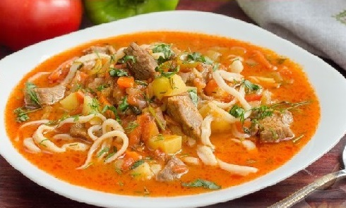

Рецепты

Ингредиенты:
Говядина (мякоть) - 600 г, картофель 200 г (2 шт.), помидоры - 450 г (2 шт.), перец болгарский - 140 г (1 шт.), лук репчатый - 110 г (1 шт.), морковь - 150 г (1 шт.), чеснок - 4 зубчика, томатная паста - 70 г, мука - 1 ст. ложка, масло растительное - 50 мл, соль - 1 ч. ложка (или по вкусу), перец чёрный молотый - 1/5 ч. ложки (или по вкусу), кинза свежая - 2-3 веточки, укроп свежий - 2-3 веточки, базилик свежий - 2 веточки, вода - 500-700 мл, мука - 450-500 г (примерно 3 стакана объёмом 250 мл), яйцо - 1 шт., вода - 200 мл, соль - 1/2 ч. ложки, масло растительное - 25 мл.
Рецепт:
1.Подготавливаем продукты.
2. Для приготовления теста для лапши все продукты должны быть комнатной температуры.
3. Просеиваем муку в глубокую миску.
4. В воде растворяем соль..
5. В муке делаем лунку и разбиваем в неё яйцо. Перемешиваем.
6. Выливаем подсоленную воду, замешиваем тесто сначала венчиком, затем руками.
7. Стол и руки смазываем растительным маслом и вымешиваем тесто 5-7 минут.
8. Округляем тесто.
9. Выкладываем тесто в пакет и отправляем в холодильник на 1 час.
10. Мясо тщательно промываем, обсушиваем бумажным полотенцем. Нарезаем небольшими произвольными кусочками.
11. В казан вливаем 50 мл растительного масла и разогреваем его. Выкладываем туда мясо, всыпаем 0,5 ч. ложки соли и чёрный молотый перец.
12. Обжариваем мясо на сильном огне до испарения почти всей жидкости, примерно 7-8 минут.
13. Очищаем картофель, лук и морковь. Сладкий перец очищаем от семян.
14. Лук нарезаем кубиками, морковь нарезаем мелкими брусочками.
15. Добавляем морковь и лук к мясу и продолжаем обжаривать 5 минут.
16. Нарезаем небольшими кусочками перец.
17. На помидорах делаем крестообразные разрезы. Заливаем помидоры кипятком.
18. В казан отправляем сладкий перец и тушим ещё 3 минуты.
19. С помидоров снимаем кожицу и нарезаем кубиками.
20. В казан отправляем помидоры и томатную пасту, перемешиваем и тушим пару минут.
21. Нарезаем кубиками картофель.
22. Добавляем в казан картофель и муку, перемешиваем.
23. Вливаем воду, в зависимости от того насколько жидким вы хотите получить блюдо, от 500 до 700 мл воды. Накрываем казан крышкой, доводим до кипения и тушим на медленном огне 30 минут.
24. Тесто выкладываем на смазанный растительным маслом стол. Руки также смазываем растительным маслом. Разминаем тесто в пласт толщиной примерно 1,5 см.
25. Режем получившийся пласт на полосы шириной 1,5-2 см.
26. Накрываем тесто пищевой пленкой.
27. По одной берём полосы из теста и пальцами вытягиваем в жгут.
28. 2-3 плоские тарелки смазываем растительным маслом и укладываем в них вытянутые жгутики из теста по кругу. Сверху смазываем лапшу растительным маслом.
29. Накрываем каждую тарелку пищевой плёнкой и оставляем на полчаса.
30. Очищаем и измельчаем чеснок. Зелень (кинзу, укроп и базилик) мелко нарезаем.
31. В казан выкладываем чеснок и зелень (немного оставляем для подачи). Всыпаем оставшуюся соль (0,5 ч. ложки). Тушим блюдо ещё 15 минут. Затем выключаем нагрев и даём настояться, пока готовится лапша.
32. Ставим на нагрев кастрюлю с 2 л воды. Ддоводим до кипения. Получившуюся лапшу наматываем на две руки (как пряжу), растягиваем и ударяем об стол.
33. Опускаем лапшу в сильно кипящую воду и варим 5 минут.
34. Откидываем лапшу на дуршлаг, промываем холодной водой.
35. В тарелки для подачи выкладываем лапшу.
36. На лапшу выкладываем пару половников мяса с овощами и заливаем жидкостью. Посыпаем лагман с говядиной зеленью и подаём к столу.
Готово! Приятного аппетита!

13 ноября, 2022 года.